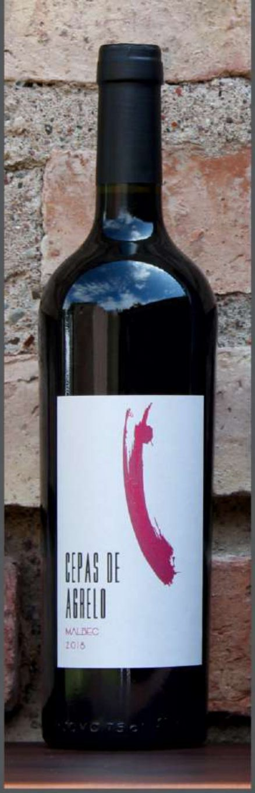
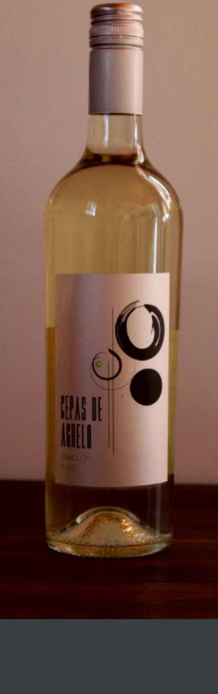
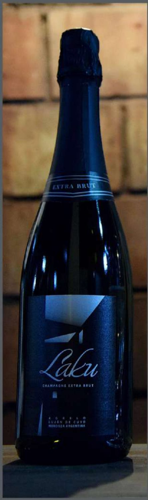

Desde 1990, la familia Accordino cultiva 17 hectáreas propias en Agrelo y elabora vinos y espumantes en una bodega con historia que data de 1920.
Uva propia, cosecha manual y elaboración en el establecimiento. Lotes limitados de cada etiqueta.

Despalillado total y fermentación controlada a 26°C en piletas de concreto. Lote limitado de 10.000 botellas.

Amarillo dorado con reflejos verdosos; nariz fresca a peras, ananá y miel; boca amable de final persistente.

Corte de Chardonnay 60% y Semillón 40%, elaborado por método Charmat. Lote limitado de 5.000 botellas.
Bodega Laku es un emprendimiento familiar iniciado por Don José Accordino en 1990, hoy continuado por la segunda y tercera generación. A fines de los años 90 la familia apostó por Agrelo, Luján de Cuyo — hoy una de las regiones vitivinícolas más importantes del mundo. Laku significa "abuelo" en mapuche: un homenaje a nuestra historia.
17 hectáreas propias a 1.000 m.s.n.m., con 25 años de antigüedad. Malbec, Merlot, Cabernet Sauvignon, Chardonnay, Semillón, Sauvignon Blanc y Pinot Meunier, con riego y poda tradicionales.
Data de 1920, con valor histórico-patrimonial para la industria vitivinícola mendocina. 1.800.000 litros de capacidad entre piletas de concreto, acero inoxidable y hormigón.
Método Charmat en tanques autoclave de 5.000 litros, con uvas 100% propias que garantizan la consistencia del producto año tras año.
En la capital mundial del Malbec, le abrimos las puertas de la bodega a visitantes de todo el mundo para vivir experiencias auténticas.
Escribinos por WhatsApp y te contamos todo sobre nuestros vinos y experiencias.